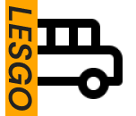

Overview
Get there faster and easier.
Problem
A local transportation agency has recently expanded and added numerous bus routes that happen to stop at a particular bus stop, which has led to commuter frustration and confusion.
A solution is needed to communicate to commuters when each bus arrives at a particular stop, how much time is needed to get to a particular stop before the bus arrives, and displays a list of future bus line arrival times at each bus stop.
Solution
A mobile application that satisfies client requirements and is tested to ensure that users know the what, when and how regarding bus line arrival and departure times at a particular bus stop.
Target Audience
Public transportation commuters.
Deliveries
Research Plan, Competitive Analysis, User Survey, User Interviews, Personas, User Journey, User Stories, User Flow, Sitemap, Wireframes, Branding, Usability Testing, High-Fidelity Prototype
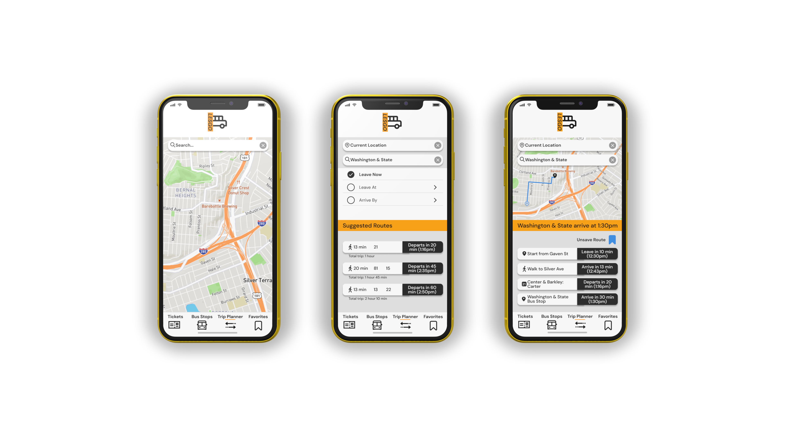Deliverables
- Research Plan
- Competitive Analysis
- User Survey
- User Interviews
- Personas
Research Plan
Prior to diving into research, I formulated a research plan to identify my research goals and methods.My goals were focused primarily on understanding users and identifying design opportunities and areas of improvement. My research methods included a competitive analysis, user survey and interviews, along with personas and user stories.
Competitive Analysis
First, I conducted my competitive analysis of popular mobile public transit applications. I utilized the SWOT method to focus primarily on Moovit and Google maps. While reviewing Moovit and getting familiar with its offerings and user interface, I noticed two primary strengths and weaknesses that stood out.
Notably, Moovit has an excellent feature in live directions and updates. It’s incredibly transparent in how it conveys transit updates like route modifications or service disruptions. Additionally, it provides user feedback in the form of live icons so you know where exactly you are when utilizing the directions feature.
As for weaknesses, I noticed that there were no commuter feedback reporting (i.e. bus cleanliness or safety) and I also didn't see any information regarding how you could pay or get pricing information for a particular bus line or station.
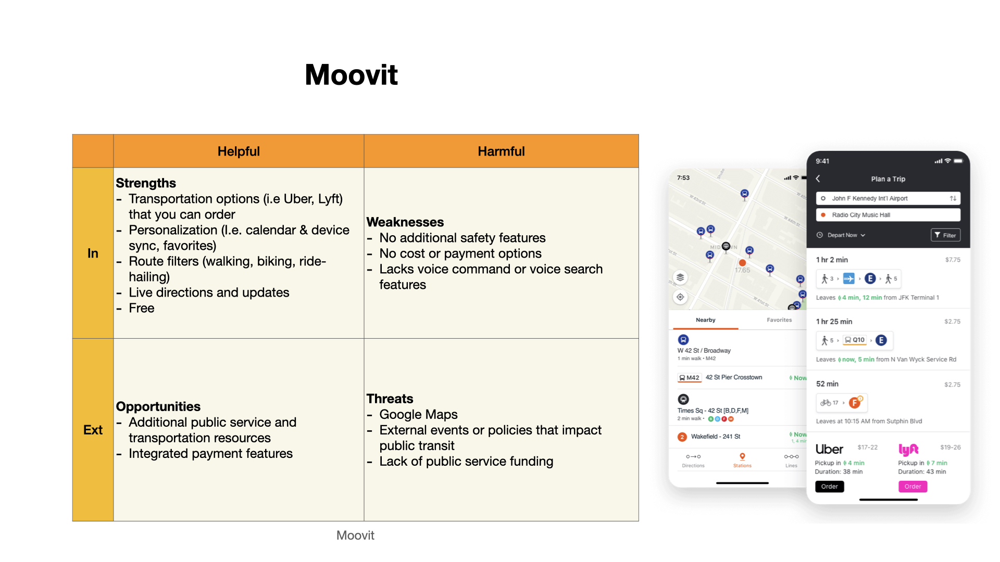As for Google Maps, I noticed that the features such as saving a route or adding a trip to your calendar wasn’t as transparent and clear because you have to go through quite a bit of information and text to find the icons or links which are surprisingly, quite small. I also noticed that there were no payment integrations for public transportation.
As for strengths, I found Google Maps to be incredibly intuitive and the UI is clean and straightforward. I especially loved that this app is loaded with features and personalization opportunities like reviewing on-board bus reports and syncing easily with other Google applications like Google Calendar.
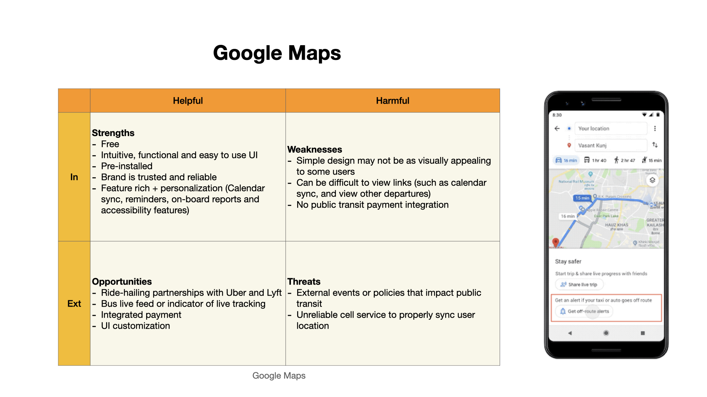User Survey
After completing my competitive analysis, I created a survey to gather additional quantitative insights, particularly insights from those who have an incarcerated friend or family member. My survey findings would then help me back up any design decisions later on in the process.
I had a total of 96 survey respondents and 66.7% of these respondents have or had an incarcerated friend or family member. 75% of those 64 respondents said they communicate with their incarcerated loved one, every day and 40% of them use inmate communication mobile apps.
The preferred methods of communication with incarcerated friends and family are mobile apps (40%), phone calls (21.9), in-person visits (21.9%) and video visits (9.4%).
The most important aspect when staying in touch with the incarcerated friend or family member is hearing their voice, exchanging messages and pictures, and having a convenient, flexible and affordable method to stay in touch. The most frustrating aspect of staying in touch is the fact that its expensive and it's limited.
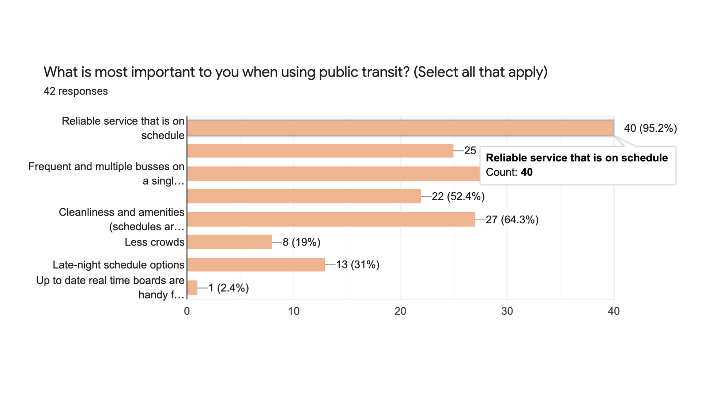 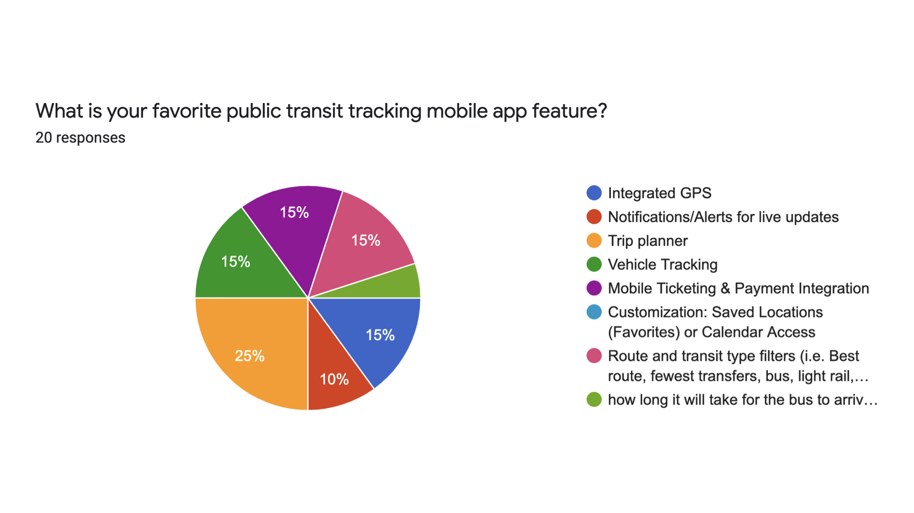
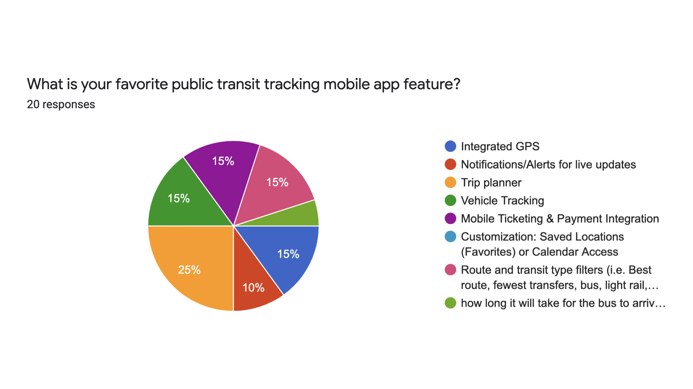
User Interviews
Once my survey closed, I then had the opportunity to gather qualitative insights by conducting user interviews with 2 survey respondents who not only had experiencing utilizing public transit, but who have also used transit mobile applications in the past.
Ultimately commuters who use public transit apps are are looking for apps that clearly tell them where their bus is and how long it will take to arrive at the desired bus stop. Ideally, commuters prefer an indication that this data is live so service disruptions are updated immediately. Also, users prefer to utilize their mobile to make easy payments so users would like to be able to find a ticket and pay for it easily with their phone.
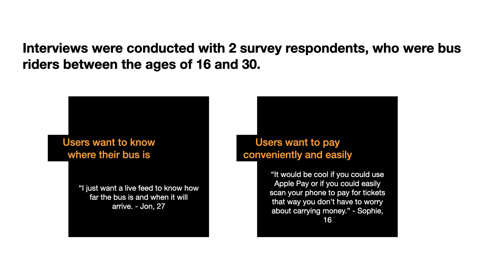Wants
- Live public transit data
- To know how far away the bus is from the users locations
- To know when the bus will arrive at the bus stop
- Quick and easy payment options (i.e. Apple Pay)
Expectations
- Live data feed to easily see the live bus schedule
- Payment integration to purchase bus tickets easily
- Easy-to-use and intuitive app
Personas
Based on the demographic insights from my user survey, 40% of respondents were between the ages of 25 and 34, while 28% were between the ages of 18 to 24. 37.7% had a Bachelors degree, and 24.4% had some college experience. Many of the respondents identified their occupation as “Student” and 48.9% identified their race-ethnicity as Caucasian and 20% identified as Hispanic or Latino.
52.4% of respondents reported using public transit because they did not have a personal vehicle and 16.7% reported using public transit as a way to save money. Surprisingly I noted that survey respondents added their own reasons, many noted using public transit as a way to avoid event costs and parking expenses.
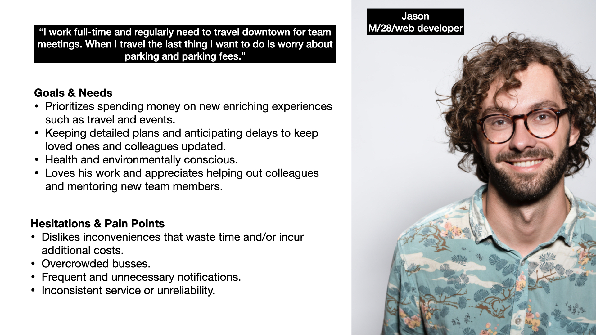Deliverables
- User Stories
- Sketches
- User Flow
- Sitemap
- Wireframes
User Stories
Prior to diving in to ideation via sketching, I needed to clarify user needs by identifying key needs from my user research findings. I did this by crafting user stories using the Jobs-To-Be-Done framework.
As a [type of user], I want [this goal] so that [this reason]
The user stories that I identified as being the high priority items based on the business requirements and the expectations that users expressed during the Discover phase. It was clear that users are concerned with knowing the important details regarding public transportation such as what bus is arriving, when the bus is arriving, how to plan a trip to a particular destination and how to pay for a trip.
- Know what specific bus is arriving where so that I can plan my trip and manage my time accordingly.
- Know when the bus I need is arriving, so that I can calculate how much time I have to get to the bus stop.
- Know how I can plan my trip, so that I can know what I need to do to get where I need to be.
- Know how I can pay for my trip, so that I can avoid inconveniences and prevent missed departures or delays.
Sketches
Once I had a good grasp on product needs, I began sketching my user flow and wireframe. Doing so helped me think through how the app might look and how it would function.
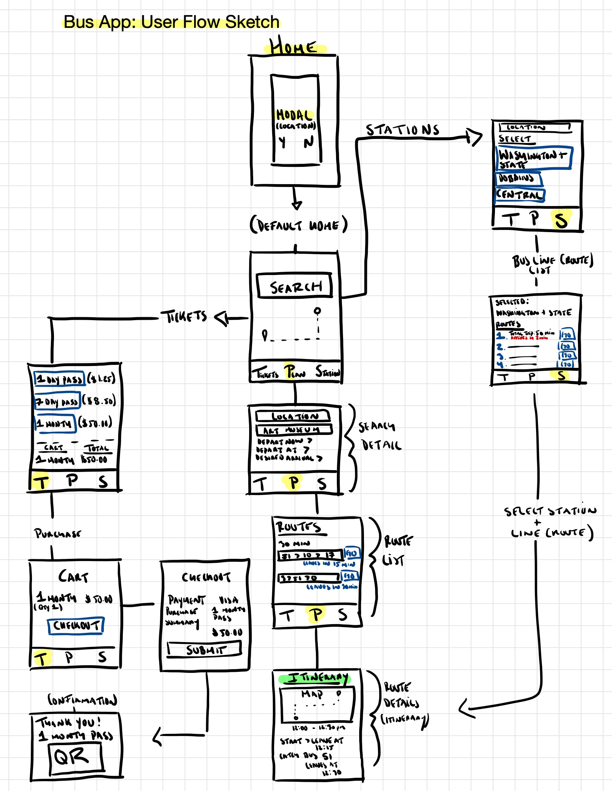User Flow
I envisioned an application with 3 screens - one trip planner, one for mobile ticketing and purchases and the other completely dedicated to satisfying business requirements to ensure client and user satisfaction.
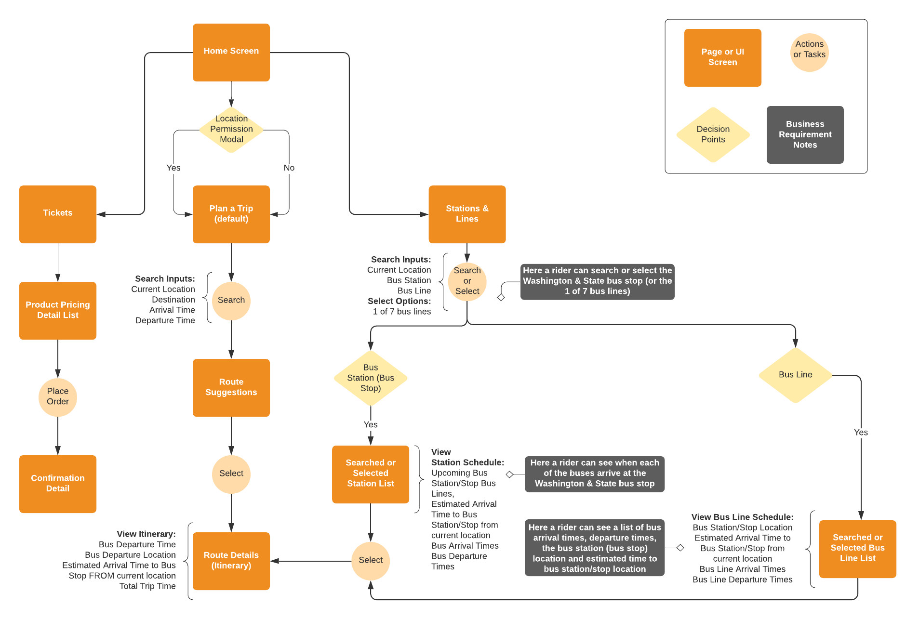Sitemap
Once my user flow was clear, I then created a sitemap listing the primary screens in the navigation along with the supporting detail pages.
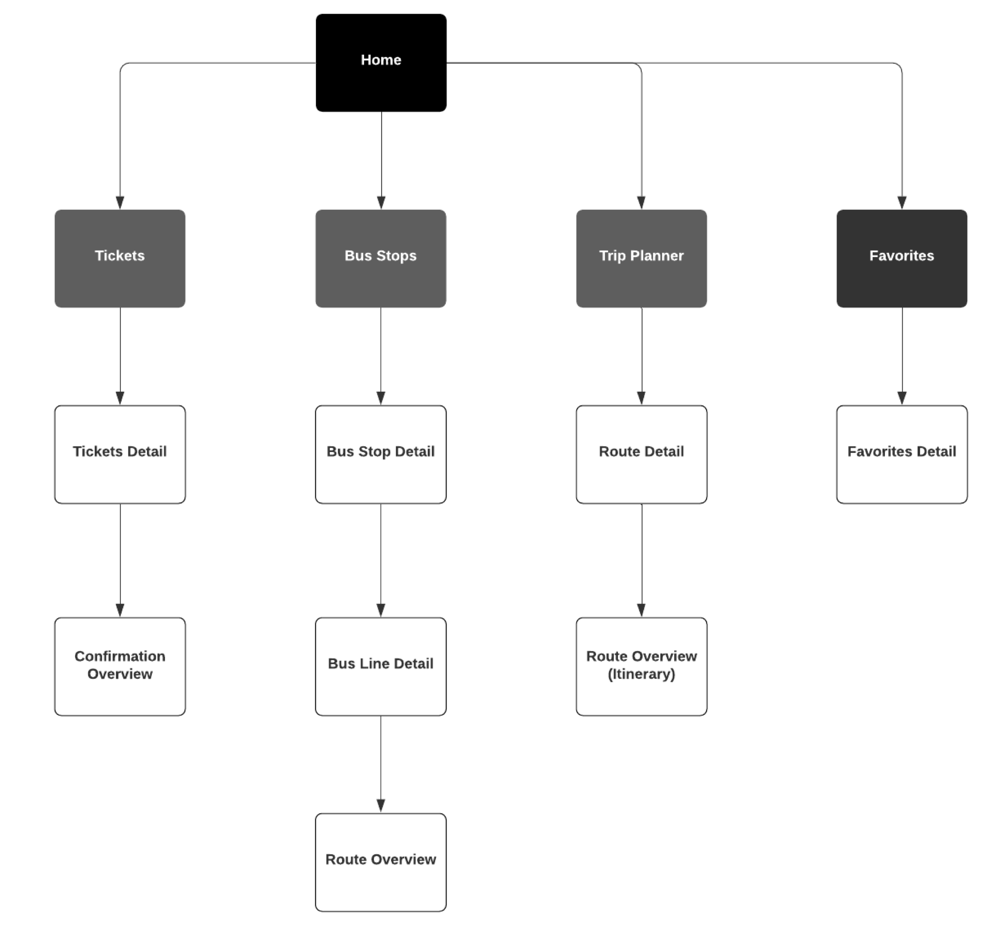Wireframes
I created two versions of wireframes. The second version includes revisions that were made based on verbal feedback that I received.
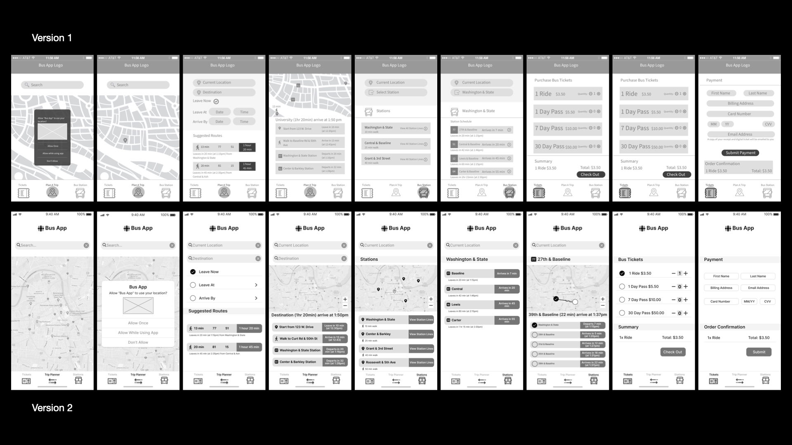Deliverables
- Branding
- Hi-Fidelity Prototype
- Usability Testing
Branding
My design is inspired by my younger years when I discovered "public transit". In particular, the standard school bus. As for accessibility, when I initially created my branding guide, I did not verify if the colors and the design were color blind safe and easy-to-read. However, after improving my high-fidelity prototype and going through user testing, it was clear to me that I had overlooked this crucial step. The second version of my branding is the primary style and branding guide which I verified is color blind safe and passes WCAG AA and AAA standards. The final design is revised to improve accessibility and usability.

Hi-Fidelity Prototype (V1)
I went through three rounds of iterations based on feedback that I had received while conducting usability testing. Based on the feedback that I received, I went on to implement several changes (which are marked on this screen by a red “X”). I revised the opacity percentage in the modal screen as it was initially too light and didn’t create enough of a contrast.
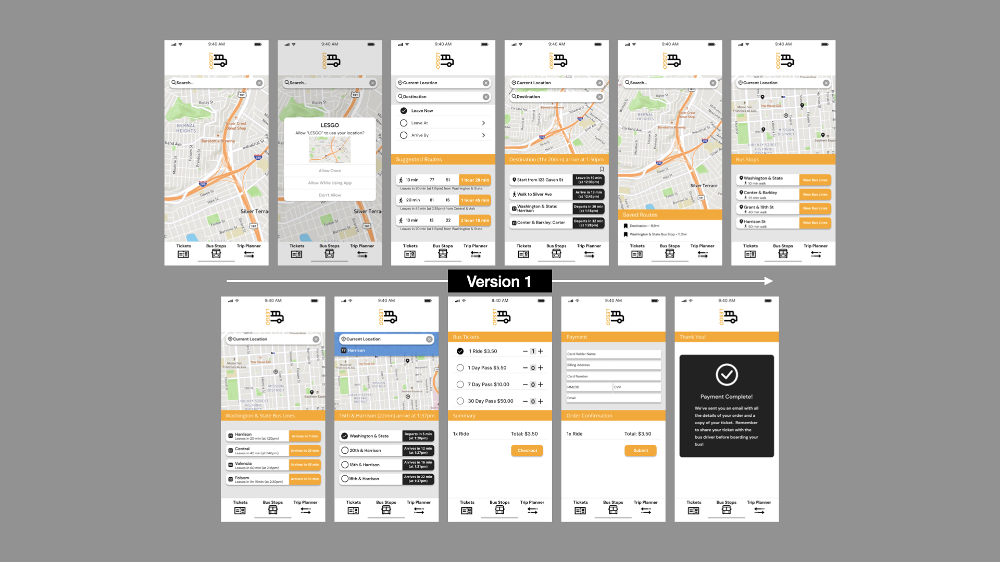I also revised the button content on the Trip Planner Suggested Routes page so that the content is consistent so that the departing and arrival time is noted on the right while the total trip time is listed below the button.
I also made the favorites icon (to save a route) larger in the Trip Planner detail page and I created a “Saved Routes” section on the home screen, per usability testing feedback. I also made a small change to the payment detail page just to bring more color to the overall design and make use of the accent blue.
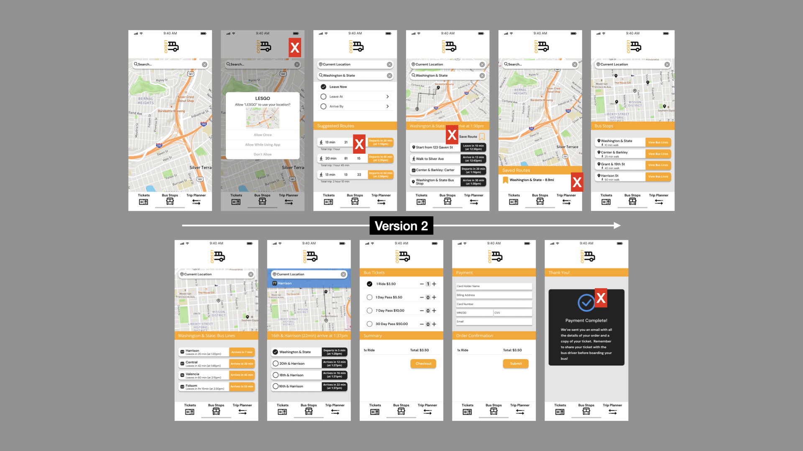My final prototype however was improved upon based on the usability testing. As I mentioned when I discussed branding, my initial two versions did have color contrast accessibility issues. This was addressed in usability testing when I received feedback that the orange and white were difficult to read so I adjusted the logo slightly along with the headers and buttons (which were updated for consistency) so the contrast ratio meets WCAG standards.
I also revised the flow so the homepage is the Bus Stops screen to best address the priority of client and business requirements. I also updated the navigation so it's clear where the user is when they navigate the application. Finally, I revised the favorites icon and created a separate Favorites screen that also included in the navigation, per usability testing feedback.
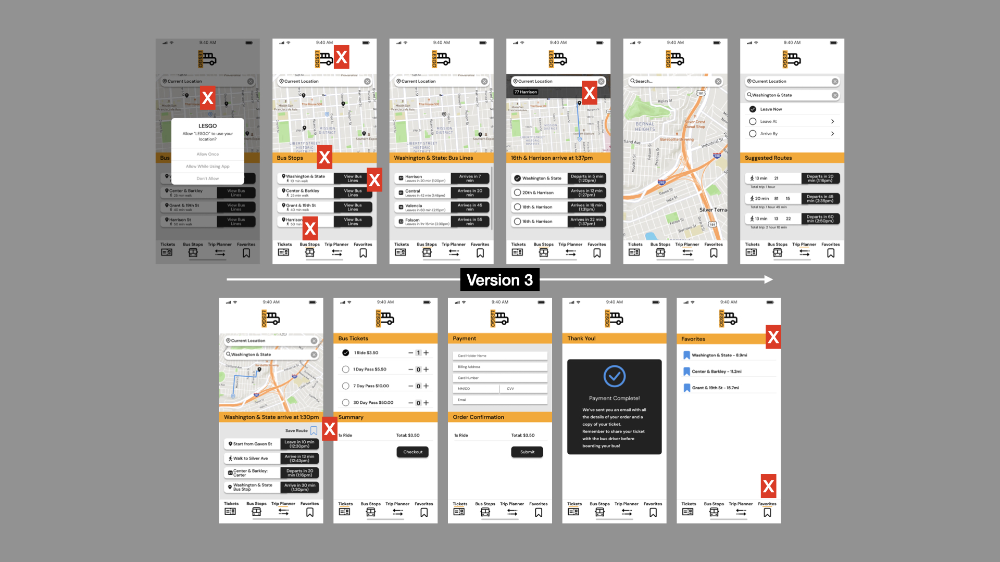Usability Testing
I facilitated 10 minute in-person sessions with 4 testers who were screened on the basis of having participated in my user survey and who had experience with both public transportation and public transit mobile apps. I conducted usability testing throughout each iteration of my prototype and I tested for metrics such as the time taken to finish tasks, interface learnability, issue count and participant satisfaction.
- The contrast and accessibility issue (Primary use of orange and the fact it was difficult to read).
- Incorporation of the favorites icon and making the favorites feature its own screen.
- User feedback (Create an obvious indication so users know where they are with respect to the navigation).
- Button content, style and text size consistencies.
The most notable issues reported by testers, which resulted in making appropriate revisions to my prototype are:
Deliver
Your commute just got better.
With the help of my prototype, commuters can easily identify when each bus arrives at a particular bus stop to avoid waiting in line longer than necessary. Commuters are able to know which buses arrive next using one quick glance and this information is updated every 10 seconds for accuracy. This makes sure that users don't miss their transport because they were standing too close or not close enough from where the upcoming arrivals will sign on as well.
Continuing to do research and usability testing is the best course of action for this app. It will help me figure out new features that I should add, as well as identify what users want from a transit-related application like Lesgo.
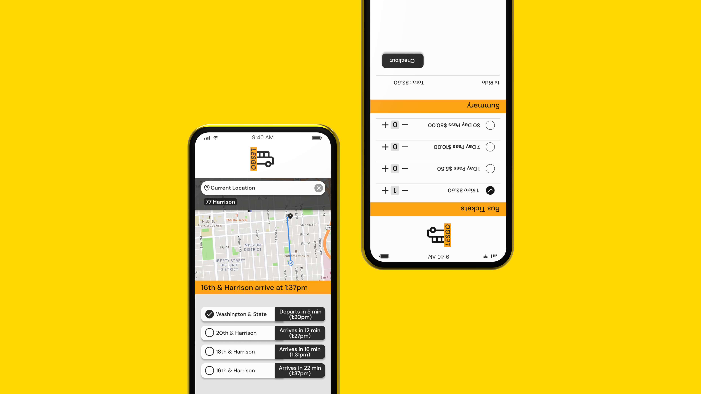